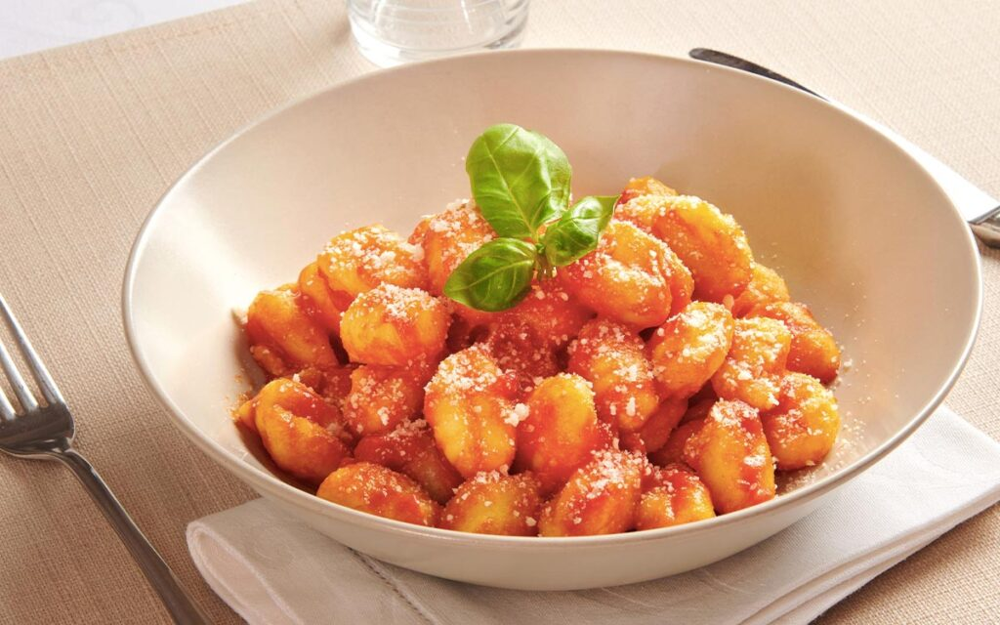

Nhoque de batata
Ingredientes (6 porções):
- 6 batatas médias
- 1 xícara de farinha de frango
- Sal a gosto
Molho
- 1 lata de molho de tomate
- 1 colher (sopa) de azeite
- 1/2kg de carne moída
- 1/2 cebola
- 2 tabletes de caldo de carne
- 1 pacote de queijo ralado
Utensílios
- Panela
- Descascador de legumes
- Escorredor de massa
- Tigela
- Espremedor de batata
Modo de Preparo ◔:
Tempo: 60 min
- Cozinhe as batatas, em água, até que estejam macias.
- Descasque-as e passe pelo espremedor ainda quentes.
- Vá acrescentando a farinha aos poucos e o sal, amasse bem.
- Coloque a massa sobre uma mesa enfarinhada e faça rolinhos.
- Corte cada rolinho em pedaços de mais ou menos 2 cm.
- Leve ao fogo, em uma panela com bastante água temperada com sal.
- Quando a água levantar fervura, vá colocando os nhoques, até eles começarem a subir.
- Coloque água fria em uma bacia com um escorredor dentro, retire os nhoques já cozidos e coloque-os no escorredor para dar choque térmico.
- Repita o processo até toda massa estar cozida.
- Escorra bem e coloque o nhoque em um refratário, reserve.
- MOLHO - Pique a cebola, bem miudinha e, em uma panela, frite com azeite.
- Acrescente a carne e os tabletes de caldo de carne.
- Mexa bem, quando a carne já estiver cozida, acrescente o molho e deixe cozinhar por mais 4 min.
- Despeje-o sobre o nhoque, salpique queijo em cima e leve ao forno para gratinar, sirva quente e bom apetite!